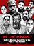

“This country belongs to us all.”
Liaqat Ali is a resident of Ballabhgarh, a town in Faridabad district of Haryana - the same town where a 16-year-old Junaid lived, before he was brutally lynched while travelling on a train from Delhi’s Sadar Bazaar.
His only crime - he was a Muslim.
According to an IndiaSpend survey, since 2010, 86% of victims killed in cow-related violence in India have been Muslims. Mob lynching in the name of ‘gau raksha’ seems to have become the new ‘normal’, the hatred spilling over into our political discourse, Twitter timeline, and everyday lives.
How has increased intolerance affected inter-community ties, social relations, mindsets, even business practices among India’s Muslims? Is the polarising discourse restricted only to TV studios and newspapers, or is there a pervading atmosphere of fear?
The Quint speaks to Muslims in several cities and towns across the country in search of answers.
Click on the location points to see what people said.
“A lot of people view Muslims with discomfort, and I don’t know why they feel so.”
This is what Mohammed Imran from Bikaner in Rajasthan says, as he goes on to talk about how a narrative has been created in India in the past few years where Muslims are seen as ‘bad people’.
A change in people’s attitudes, an atmosphere of fear, increasing intolerance and wariness of hate-mongering - most Muslims confess that after a spate of mob lynching incidents, there’s a sense of being under constant threat.
For some, the harshest impact of mob lynching in everyday lives is the transformation in the mindsets of non-Muslims; reflected best in ‘gau-raksha’ politics.
Some Muslims asked why most political parties had refrained from outrightly condemning violence in the name of cow vigilantism while others observed that similar polarisation on communal lines had not happened under previous NDA regimes.
In Malegaon, Maharashtra, Imtiaz Ansari angrily says,
“We have to think before speaking a single word.”
It’s a sentiment echoed by Bikaner’s Mohammed Imran, who narrates how in government offices, a burkha or a beard is looked upon with suspicion, to the extent that officials don’t cooperate with them in the same way.
What does it mean to live in fear? To feel that the community you knew well, has now turned against you, and even considers you as ‘anti-national’?
Majeed from Bikaner in Rajasthan watches TV news debates, and like many in India, takes cues from the media about the events which are shaping public opinion in the country. He says,
“I was watching a TV debate where they said what is happening in the country isn’t right, and a Muslim man was forced to wear a saffron scarf.”
Media - with its TV debates, newspaper reports, and social media feeds - plays an essential role in determining a narrative of fear and hatred. The way mob lynching incidents, for instance, are reported, shapes how India’s Muslims view ‘their place’ in the society today.
But are some of the ‘facts’ that reach the audiences today, facts at all?
In the age of ‘Fake News' and highly questionable Whatsapp shares, ‘truth’ has become an elusive creature.
In May 2017, seven people were beaten to death in two incidents in Jharkhand over suspicions of them being ‘child beaters’ - ‘rumours’ which were spread on Whatsapp.
When hate-mongering posits itself as ‘news’ - on traditional media and on social media - what does the Indian Muslim take away from it all?
“No one wants a riot since they are not good for business.”
For Mohammed Shamsi, a businessman in Moradabad, UP, riots are a practical hindrance to doing business. It’s an opinion mirrored across the country, where businesses in small-towns depend entirely on good Hindu-Muslim relations.
While the aftershocks of violence against Muslims is felt, most Muslim business owners say they have good relations with their mostly Hindu customers and suppliers. We spoke to Muslims in cities like Varanasi, which have flourished for centuries on the bedrock of a syncretic Hindu-Muslim culture, to ask if such a deep social and economic relationships can crumble so easily?
Whether in Moradabad or Hyderabad, a common refrain is heard; instability is not good for business. But if we take away potential losses, which are a consequence of communal polarisation, would Muslim business owners still believe in a rosy picture? Syed Mumtaz Ali, a businessman in Varanasi doesn’t think so.
"We maintain a cordial business relationship, but no one can tell what is going on in one's mind."

“Be it human or animal, everyone feels secure living among their community.”
Ameen Raza from Jahangirabad in Madhya Pradesh, says he feels vulnerable when an incident of ‘gau-raksha’ violence targeting Muslims is reported.
Most Indian Muslims living in myriad small-towns like Jahangirabad in Madhya Pradesh, Malda in Bengal, Malegaon in Maharashtra and Darbhanga in Bihar. Many of them told The Quint that living in Muslim-only communities is essential.
In towns like Mewat in Haryana and Malegaon, people spoke of feeling a need to safeguard their Muslim identity in a public place. Local tensions, taunting neighbours and a constant fear of violence — life for many Muslims in small towns is defined by such experiences and sentiments. Afreen Hussain from Guwahati in Assam says,
“There's a feeling of threat because what happened in North India can happen in Assam too - a recognition that you are a suspect because you're a Muslim.”
But the feelings are a bit different in metropolitan cities like Mumbai, Pune, Hyderabad and Kolkata. Muslims in these cities are confident of the secular fabric of Indian society, and believe that living in a Muslim-only community is not the answer to combat growing Islamophobia. As Raja from Kolkata says, “Let religion be a personal matter’.
Except in Delhi.
The fear is so intense in the national capital that the Muslims we spoke to said that they were afraid of going out on the streets of the city with a beard or a skull-cap. For people in Delhi, safety lay in numbers - living in Muslim-only communities. Mohammed Tahir, a mechanic in New Delhi says,
“When we go out with our family, we are scared that someone will attack us. Out of fear, many Muslims don’t wear the cap and have shaved their beard,”
Could Delhi’s exceptional case of fear be since the mob lynching of Akhlaq Khan, Pehlu Khan, and even 15-year-old Junaid have taken place in Delhi’s immediate vicinity?
“We are Indians and we are happy to live here.”
Living in Hyderabad, Syed Qadir Hussain believes he has nothing to fear. As India faces intolerance, communal polarisation in public discourse and increasing incidents of mob-lynching, can Qadir and 14% of India’s population continue to believe that they have nothing to fear?
Producers
Anubhav Mishra
Maanvi
Sahasranshu Mahapatra
Abhilash Mallick
Sunil Goswami
Rohit Khanna
Video Editing
Mohd Irshad Alam
Sandeep Suman
Mohd Ibrahim
Text
Maanvi
Graphics
Harsh Sahani
UI/UX Design
Jaivardhan Channey
Developer Shahadat Hussain
Reporters
Abhinav Bhatt, Ballabgarh
Dinesh Shukla, Bhopal
Rounak Vyas, Bikaner
Niraj Sahai, Darbhanga
Anjana Dutta, Guwahati
Raju Yadaram, Hyderabad
Kiranjit Das, Kolkata & Malda
Zahur Khan, Malegaon
Fareed Shamsi, Moradabad
Sabika Razvi, Mumbai
Abhilash Mallick, New Delhi
Prachee Kulkarni, Pune
Daxesh Shah, Vadodara
Vikrant Dubey, Varanasi